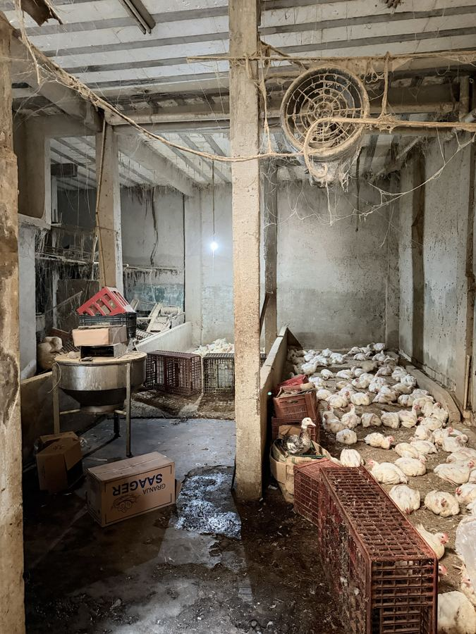
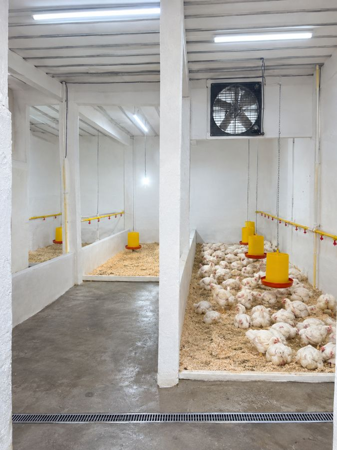
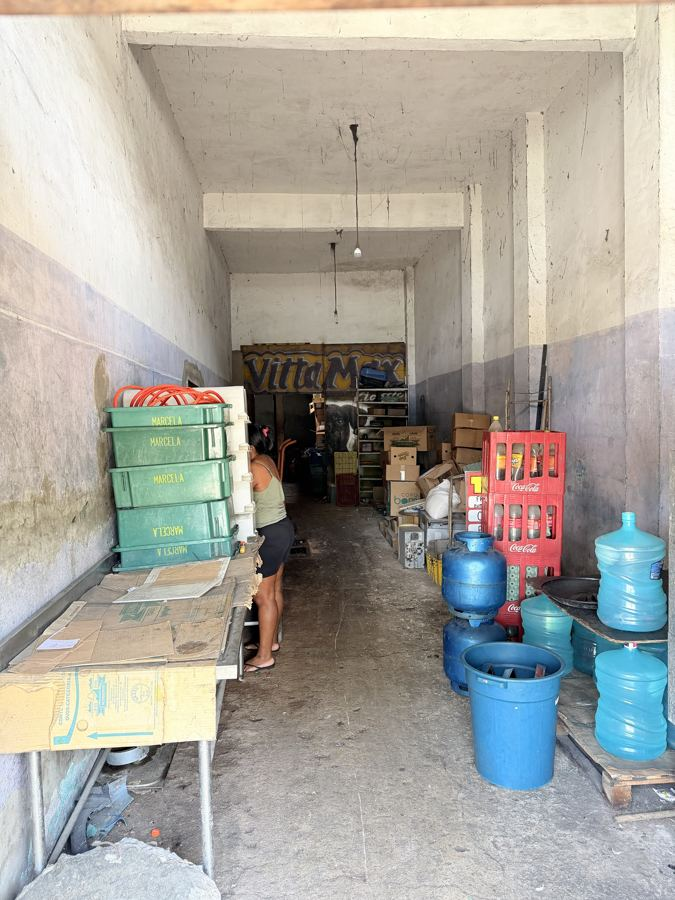
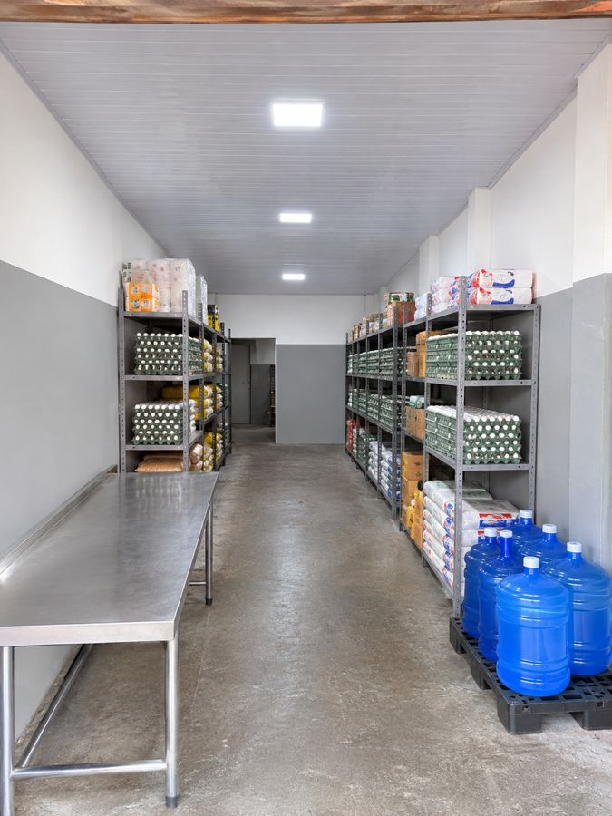
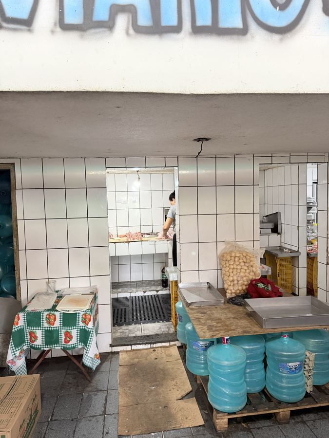
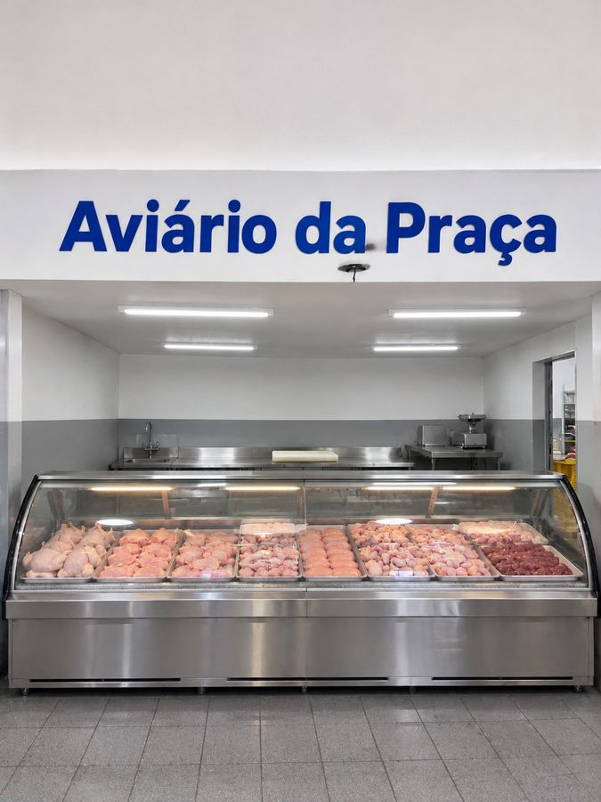
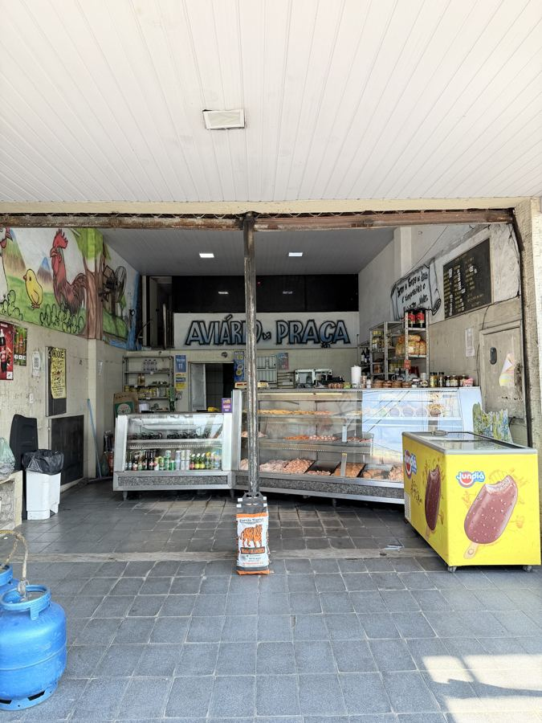
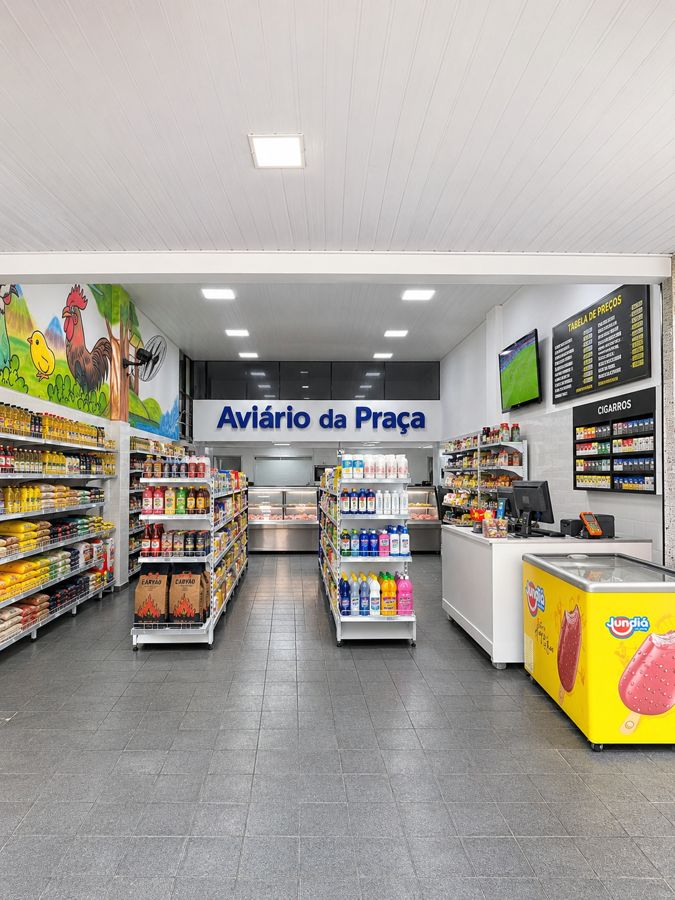

Análise das 4 fotos, com o que eu vi em cada uma, o que sugiro fazer e um desenho de como pode ficar. As medidas dos desenhos são aproximadas, estimadas pelas fotos.
As imagens de depois foram geradas por IA a partir das fotos reais. Servem para mostrar a ideia ao sócio e ao pedreiro, não como projeto exato.


Tracejado azul: linha de bebedouro nipple saindo da caixa d'água. Círculos amarelos: comedouros tubulares pendurados.


Vale considerar: se o espaço for bom, ele pode virar estoque da loja com porta interna. Assim o reabastecimento das prateleiras não passa pela calçada.


Na imagem do depois: a IA deixou a área de corte aberta atrás do balcão. Na obra, mantenha uma divisória com vidro ou a parede com a janela de passagem: a vigilância costuma exigir essa separação entre corte e atendimento.


Linha tracejada amarela: o caminho do cliente. Ele entra, passa pelo corredor 1, compra no balcão do fundo, volta pelo corredor 3 e paga no caixa.
Na imagem da loja: o cano do meio da entrada sumiu. Na obra, ele só sai depois que o engenheiro reforçar ou trocar a viga.
Sobre "tirar a parede do meio": no desenho mantive a parede azulejada da sala de corte, porque ela é a barreira sanitária que a vigilância exige. O que sai são os balcões da frente e as prateleiras de trás. Se a parede que você quer tirar é outra, me diga qual que eu ajusto a planta.